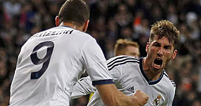
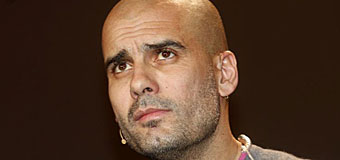
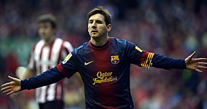
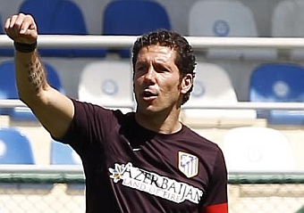
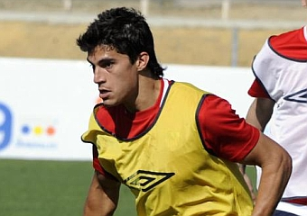

El Madrid llega tarde al vuelo a Wembley
REAL MADRID 2-0 BORUSSIA DORTMUND
Dos goles de Benzema y Ramos en los últimos diez minutos dejaron al Madrid al borde la final de la Champions por tercer año consecutivo. Pero los tantos llegaron demasiado tarde, en especial si se recuerdan las tres clarísimas ocasiones que los blancos desperdiciaron en el primer cuarto de hora y que pudieron haber definido un guión de partido totalmente distinto. Pero no; al final fue el mismo de los tres últimos años.
Modric podría ser la pareja de Xabi Mourinho sabe que necesita darle un toque más ofensivo al Madrid en busca de multiplicar las ocasiones de gol. Toca arriesgar y la opción más factible es darle un aire más ofensivo al centro del campo.Guardiola: "Todo puede pasar"

Pep Guardiola analizó en el diario colombiano 'El tiempo' la vuelta entre el Barcelona y el Bayern: "Juegan dos equipos fantásticos, todo puede pasar.¿Alguna vez lo vieron rendirse a lo imposible?

El Barcelona aspira a elevar su nivel de excelencia. Hasta seis jugadores de su plantilla saben lo que es meterle cuatro goles al Bayern en el Camp Nou.Maestro Simeone

El argentino impartió una clase magistral de una hora a 15 jóvenes futbolistas azeríes con edades comprendidas entre los 16 y los 18 años.Perotti vuelve a la pelea

De las pocas noticias realmente positivas que se pudieron extraer despues del partido contra el Valladolid está el rendimiento de un Diego Perotti, que vuelve por sus fueros.
Iniesta: "No tiene sentido hablar de fin de ciclo" Andrés Iniesta dio explicaciones en rueda de prensa tras la dura derrota ante el Bayern. El centrocampista no cree que sea el fin de esta generación. "Veo injusto que se hable de cambio de ciclo. Este equipo, en los últimos cinco años, ha conseguido dos Champions, tres semifinales, estamos a punto de ganar la cuarta liga en cinco años, que sumando Supercopas y todo lo demás... bendito ciclo".Mainz: ''A ganar por necesidad'' Los dos últimos partidos disputados por el Granada, en los que ha sumado cuatro puntos, han cambiado totalmente el ánimo de la plantilla, que ha recuperado la confianza en el tramo más importante de la temporada, con cinco finales por delante para lograr el objetivo de la permanencia.Michel Platini pide que critiquen al jeque y no a la UEFA Son días vitales en el Málaga. Los rectores del club trabajan en la definición del futuro proyecto y buscan asentar unas relaciones con los estamentos nacionales del fútbol, mientras el inquilino del banquillo de la temporada 2013-14 sigue sin estar claro.

 Futbol
Futbol